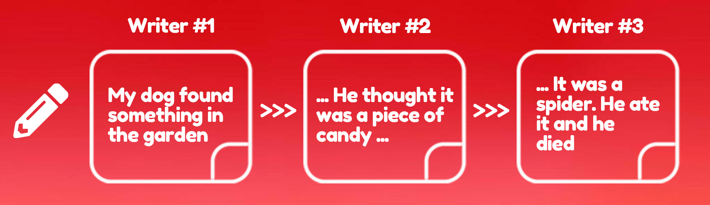
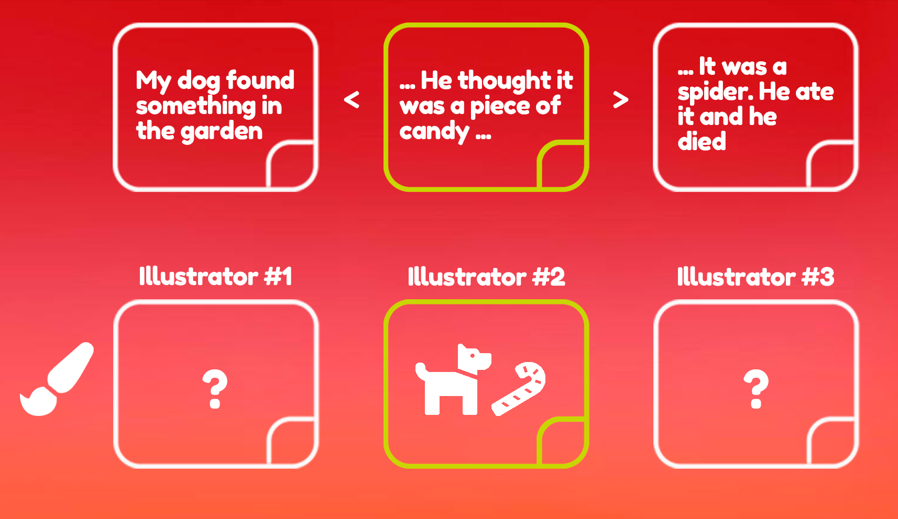
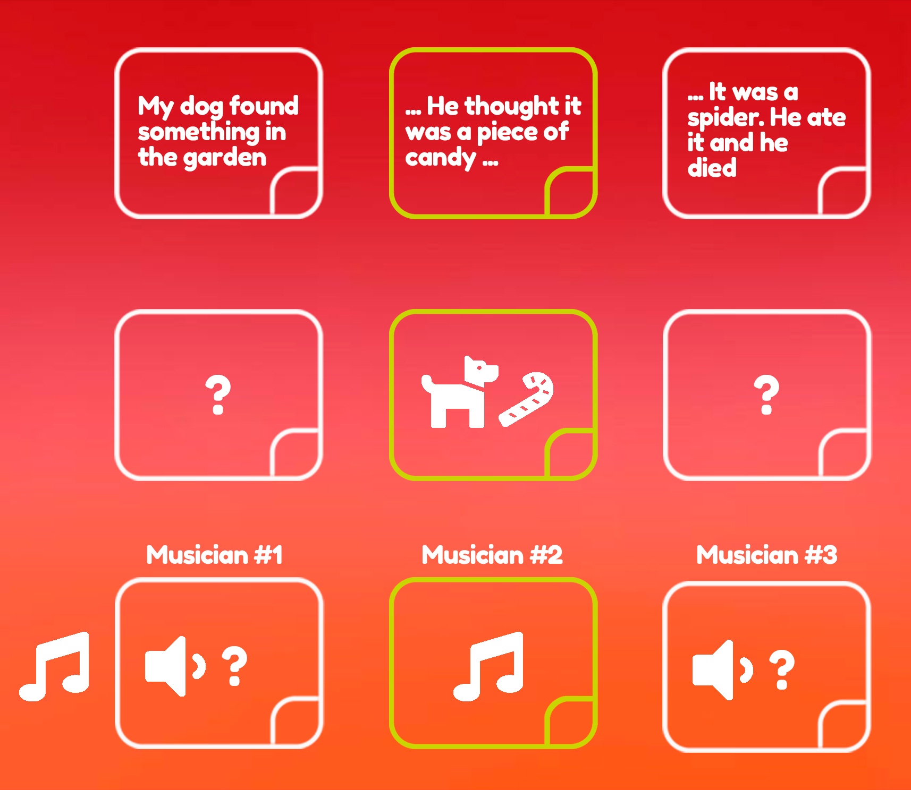
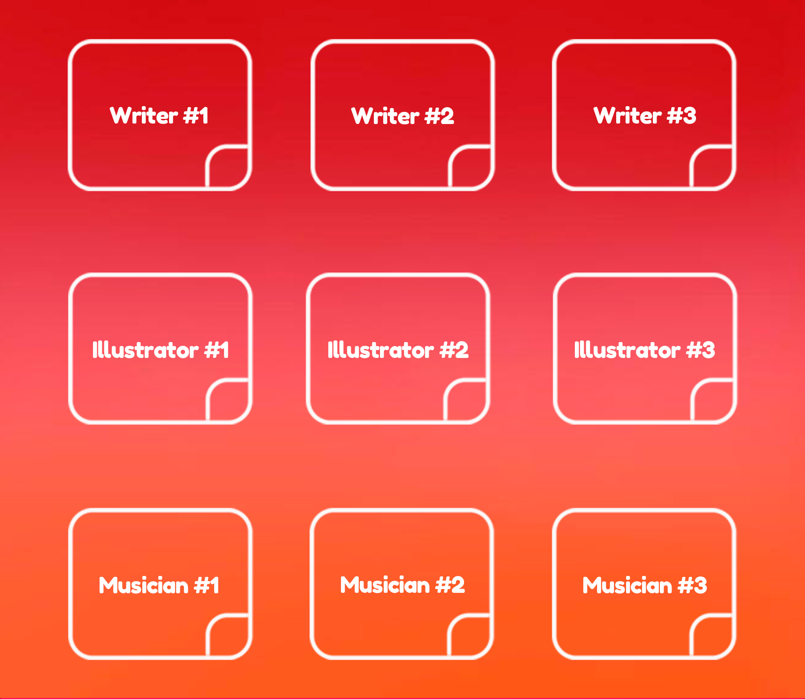

What is NetStories?
And the inspiration behind it.
NetStories takes advantage of the hyperconnectivity of the 21st Century and offers a platform to connect with like-minded artists.
The issue
Despite there are many sites where content creators can share their work with users or customers, there is no place for creators to connect with other creators to work together. Now more than ever, content creators can take advantage of the interconnectivity that the internet offers in order to establish work networks. NetStories is a platform where artists and content creators can find people with both similar or different skills in order to work together.
The objective
New ideas come up everyday from everywhere, but sometimes as content creators, we can not do all at once. Imagine having people with the same vision as you, working on your own project. NetStories looks for being an active platform where the community of creators will be uploading and creating new stories all the time. Furthermore, NetStories expects to storage thousands of artists profiles in order to make them more accesible to anybody that wants to contact them. We believe that NetStories can be a revolutionary platform for artists to start recruiting talented people and work on independent projects.
How do we do it?
NetStories looks for the most creative way of connectig creative people, and that is: creating creative stories.
Step 1
Writers will write a paragraph of the story and upload it for the next writer to continue it. This process will be repeated until the story is finished.
Step 2
Illustrators and animators will get an specific part of the story with its corresponding text. Illustrators and animators can scroll to read the previous and next scene but they can only work in the scene they were given.
Step 3
Musicians will get an specific scene with its text and illustration. Musicians will be in charge of creating the soundtrack for that scene.
Step 4
The story gets put together, revealing the work of all the people involved. Now everybody can see the story from the beggining to the end.

Step 5
The name of every collaborator is shown on the scene they worked on. If one collaborator liked the idea, style or music of another artist, they can get in touch with each other directly.
